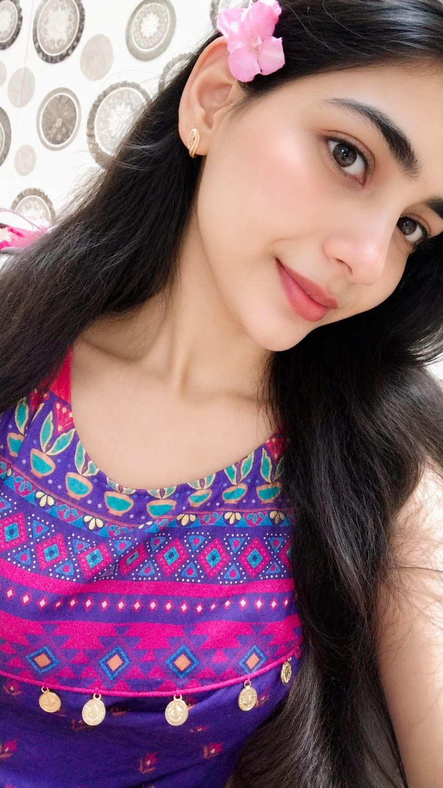
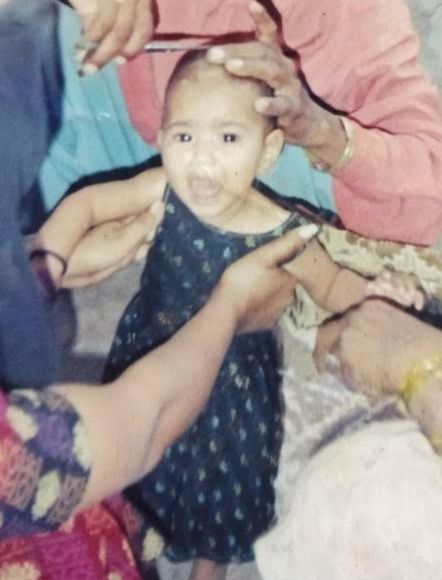
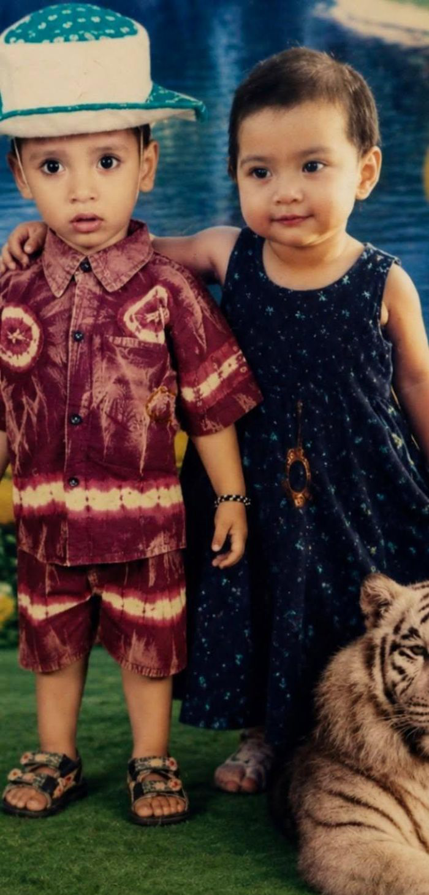
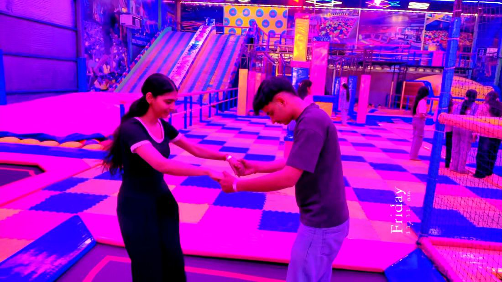
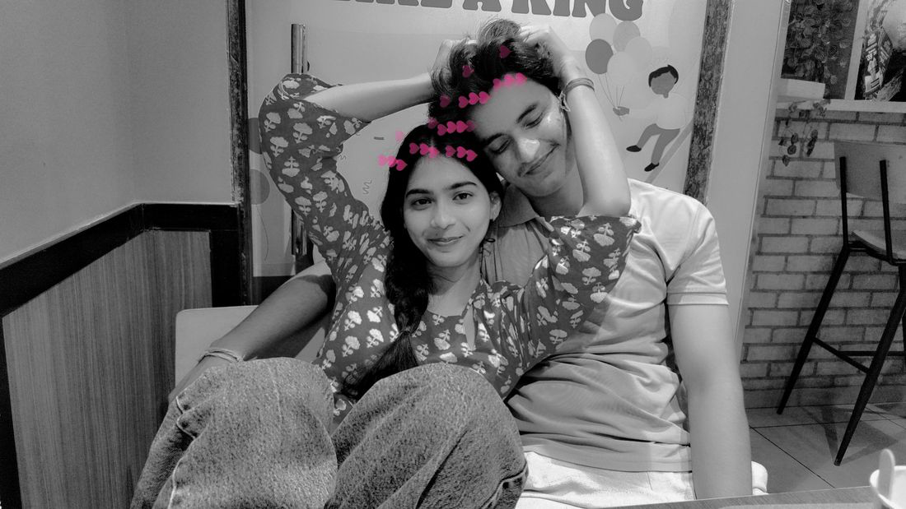
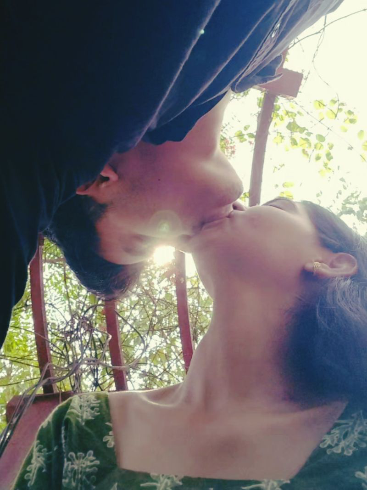

Always complaining
As if the world is personally against you. And somehow, it still works.
Happy Birthday, Chirkut
Another year of being annoying, dramatic, and somehow still my favourite person.
Enter the chaos →
A note from your personal chaos department
Happy birthday, peanut. Or should I say Chirkut, because somehow you have made a habit of being impossible to ignore. You are one of those people who casually became a permanent part of my life without even asking permission, and honestly? I’m glad you did.
You are dramatic, ridiculous, weird in exactly the right ways, and somehow still one of the most comforting people I know. You can be the biggest nuisance in the room and still be the first person I think of when I need someone to just be there without making it a whole scene. That’s a rare kind of person.
You are the kind of friend who turns ordinary days into stories, random conversations into memories, and my nonsense into something that feels less stupid just because you are there. You keep me laughing, you keep me sane, and you keep reminding me that some people are just impossible to replace.
So happy birthday, Chirkut. Keep being loud, annoying, emotional, hilarious, and wonderful. Keep being exactly yourself. The world is better with people like you in it. Also, don’t even pretend you’re not one of my favourite humans.
The weirdly important part
Technically, you’re my best friend. Unfortunately for both of us, that means you have permanent access to my nonsense.
Somewhere between stupid jokes, random talks, and knowing way too much about each other, you became one of my favourite people.
It’s not just “we’re close.” It’s the kind of closeness where everything feels a little too easy and a little too important.
A memory scrapbook





Not said enough
Official documentation
As if the world is personally against you. And somehow, it still works.
Small in size, huge in drama, and dramatically convinced the whole universe is against you.
Nothing is simple when you are around, and yet somehow that chaos is half the charm.
Whether you caused them or just somehow got dragged into them, you were there.
Peak emotional intelligence, very low tolerance for nonsense, and a talent for making life louder.
All of the chaos, all of the weirdness, and somehow still absolutely worth it.
A friendship, not a checklist
Started with a lot of nonsense and somehow never stopped.
Every weird little moment became a memory we still laugh about.
Somewhere between all the chaos, you became a fixed part of my world.
The kind that feels effortless, familiar, and completely real.
More than ordinary friendship, without needing a label to explain it.
The real part
You don’t have to put a perfect label on every important person in your life. Sometimes someone just becomes important. And you did.
Not in a dramatic, cinematic way. Just quietly, naturally, and in a way that makes a lot of ordinary days feel a little less ordinary. You became one of those people who feels like part of the background of my life, but also one of the warmest parts of it.
Happy Birthday
Keep being exactly as weird, dramatic, annoying and wonderful as you are. The world is genuinely better with people like you in it. And yeah… I’m really glad I get to call you my best friend.
Now go enjoy your birthday before I start getting emotional. 🤧